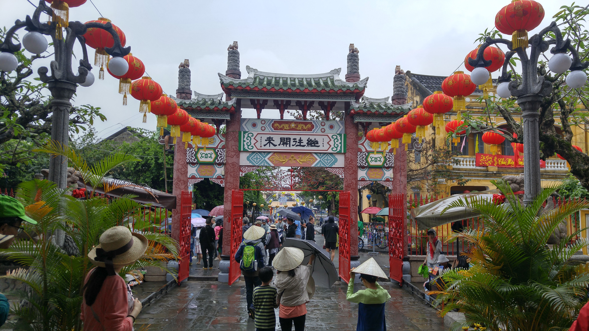

Go Back
Hoi An

Hoi An is a very well preserved former Southeast Asian style trading port. The architecture of the buildings and layout of the city reflect a blend of indigenous and foreign influences. The ancient town is listed as a UNESCO world heritage site and it's undoubtedly one of the most popular places in Vietnam for tourists. It's located about 45 minutes south of Da Nang and is located in Vietnam's central Quang Nam province. Some of the best activities here are exploring the ancient town, relaxing at An Bang beach and getting custom tailor made clothes. Here is my guide to Hoi An.
The main attraction in Hoi An is definitely the Ancient Town. As I mentioned it's a very well preserved trading port with beautifully decorated and colourful buildings. Nowadays you can stroll around the old town and see the pagodas, temples, museums, lanterns and shops. The river runs right through the middle of the old town and is a very popular hangout spot. Some of my favourite restaurants and bars in Hoi An are in the south part of the ancient town across the main bridge. Some of the most noteworthy places to see in the ancient town are the Japanese Covered Bridge, The Old House of Phung Hung, Hoi Quan Phuoc Kien, Cong Chua Ba Mu, and the Cam Pho Temple to name a few. There are many many beautiful places to see and museums to explore. This area is very touristy and has all of the things that come with that which range from souvenir shops to restaurants, cafes and bars. You'll also find dozens of tailors where you can get custom made clothes such as suits, dresses or shirts. I'll go into more detail about that in the tailor made clothes section. Another notable feature within the ancient town is the markets. You can find the main food market of the city here which is comparable to many other Vietnamese markets. You can also find the night market and street food market areas. One of my most memorable experiences here was during the Lunar New Year when people would send lanterns with candles inside floating down the river. It's a beautiful ritual that occurs here every year. The ancient town has many things to do and see and is absolutely worth adding to your Vietnam bucketlist.
An Bang Beach is the main beach in the area and offers a different dimension to the already fascinating city. The day I went wasn't the nicest day unfortunately but the beach itself is beautiful. I recommend renting a bicycle from your accomodation in the city and riding out here past the rice terraces. There are different restaurants along the beach where you can get food and many places that offer beach beds for you to enjoy the relaxing atmosphere.
One of the most popular activites here for tourists is to get clothes custom made. Instead of buying a brand new suit in a Western country for nearly 1000 dollars which doesn't even fit you properly why not get one custom made for only a couple hundred dollars? There are dozens of custom clothing stores in Hoi An that will take all of your measurements and consult with you to make your desired outfit. I personally got a wool and kashmere suit made at a place called BeBe Tailors. It cost about 200 usd back in 2017. The suit has held up well and was very nicely made. Many places here however don't have fixed prices and bardering is usually necessary if you want to get your price. With that being said even their initial high offers are usually much cheaper than what the equivalent would cost in a Western country. It's a memorable experience and you'll be very proud of your new custom made clothing!
Aside from the local favourite dishes here you'll also find a variety of Western foods as the city is an important tourist hub and is increasingly popular with expats. One particular dish from Hoi An that stood out for me is "Cao Lao" which translates to "top floor". It typically consists of pork and greens on a bed of rice noodles made from rice. It's called top floor because the dish is packed to the top with deliciousness. You can find Cao Lao throughout Vietnam but the dishes origins can be traced back to Hoi An. My favourite restaurant in the town is called Madam Kieu. I thoroughly enjoyed my Cao Lao here while speaking with the hospitable staff and enjoying the surrounding views of the river and ancient town. Definitely stop by here for a meal while in Hoi An! Just adjacent to the Madam Kieu restaurant you'll find a variety of street food sold from little karts. This is a great place to walk around and try different local foods. Just down the street from Madam Kieu is Shamrock Irish Pub which is a popular place for locals and foreigners and offers a fun night out with pool and live music.